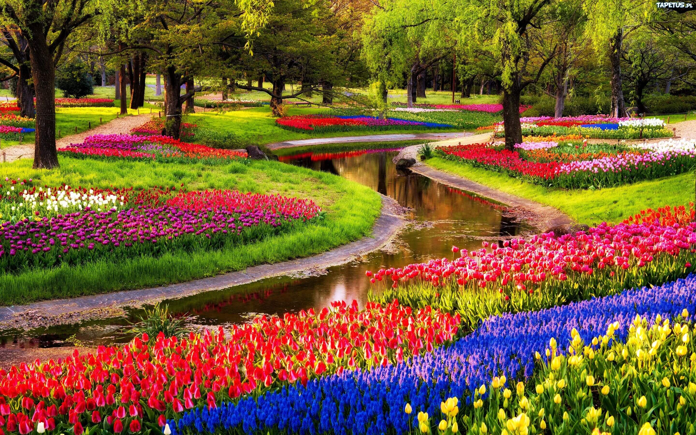
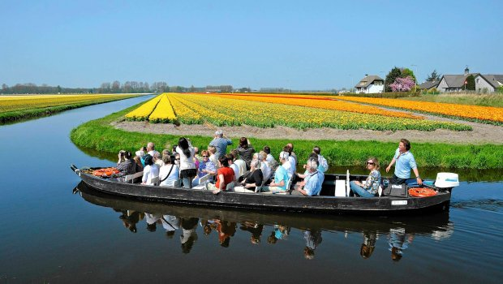

Conference Program
| Monday, April 23 | Tuesday, April 24 | Wednesday, April 25 | Thursday, April 26 | ||||
|---|---|---|---|---|---|---|---|
| 8:50 | Opening | 8:45 | Kiendl | 8:45 | Takada | 8:45 | Giannelli |
| 9:15 | Hughes | 9:30 | Dvorakova | 9:30 | Hartmann | 9:30 | Cirak |
| 10:00 | Coffee | 10:00 | Coffee | 10:00 | Coffee | 10:00 | Coffee |
| 10:30 | Bressan | 10:30 | Matculevich | 10:30 | Dokken | 10:30 | van Zuijlen |
| 11:00 | Kapl | 11:00 | Scholz | 11:00 | Bauer | 11:00 | D'Angella |
| 11:30 | Gerritsma | 11:30 | Buenger | 11:30 | Leidinger | 11:30 | Coradello |
| 12:00 | Lunch | 12:00 | Lunch | 12:00 | Lunch | 12:00 | Lunch |
| 13:30 | Tani | 13:30 | Wobbes | 13:30 | Zhang | 13:30 | Arioli |
| 14:00 | Hofer | 14:00 | Kalel | 14:15 | Scott | 14:00 | Shamanskiy |
| 14:30 | Sogn | 14:30 | Maurin | 14:45 | Elguedj | 14:30 | Hinz |
| 15:00 | Tielen | 15:00 | Jaeschke | 15:15 | Poster Session with Coffee |
15:00 | Elgeti |
| 15:30 | Coffee | 15:30 | Coffee | 15:30 | Coffee | ||
| 16:00 | Hornikova | 16:00 | Sangalli | 16:15 | Borst | 16:00 | Jüttler |
| 16:30 | Eikelder | 16:30 | Calabro | 16:45 | Chen | 16:30 | Birner |
| 17:00 | Akkerman | 17:00 | Dölz | 17:15 | Galavi | 17:00 | Takacs |
| 17:30 | Verhoosel | 17:30 | Sampoli | 17:45 |
Panel Discussion:
The Future of IGA in Industry |
17:30 | Closing |
| 18:00 | Fonn | ||||||
| 18:30 | Reception | 19:00 | Conference Dinner | ||||
Book of Abstracts
The PDF version of the book of abstracts is available here.
Excursion

On Friday, April 27, we will depart at about 8:30 from Delft to the beautiful Keukenhof, which is the largest flower garden in the world with more than 800 varieties of tulips. The history of tulips in Europe started in 1554 when the first tulip bulbs and seeds were sent to Vienna from the Ottoman Empire and caused the world's first speculative bubble in February 1637 known as Tulip mania. Today, the Netherlands is the number one exporter of tulips since it is one of the few places on the globe where these highly sought after plants are able to grow best.

After a guided tour around the park, we will relax during a whisper boat trip through the beautiful Dutch flower bulb landscape. We expect to be back at Delft at about 15:00 where you can explore the city center on your own and experience the spirit of 'Koningsdag' a national holiday in the Netherlands. Upon request we will arrange for alternative transportation from Keukenhof directly to Schiphol airport, which can be reached within 20min, for those participants who depart already on Friday afternoon.